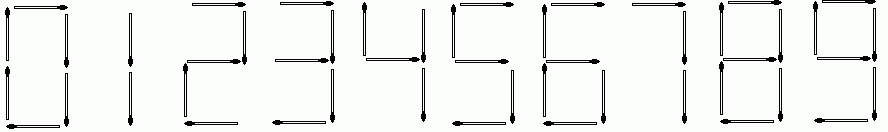

|
Problem E: Matches |
We can make digits with matches as shown below:

Given N matches, find the number of different numbers representable using the matches. We shall only make numbers greater than or equal to 0, so no negative signs should be used. For instance, if you have 3 matches, then you can only make the numbers 1 or 7. If you have 4 matches, then you can make the numbers 1, 4, 7 or 11. Note that leading zeros are not allowed (e.g. 001, 042, etc. are illegal). Numbers such as 0, 20, 101 etc. are permitted, though.
Input contains no more than 100 lines. Each line contains one integer N (1 ≤ N ≤ 2000).
For each N, output the number of different (non-negative) numbers representable if you have N matches.
3 4
2 4